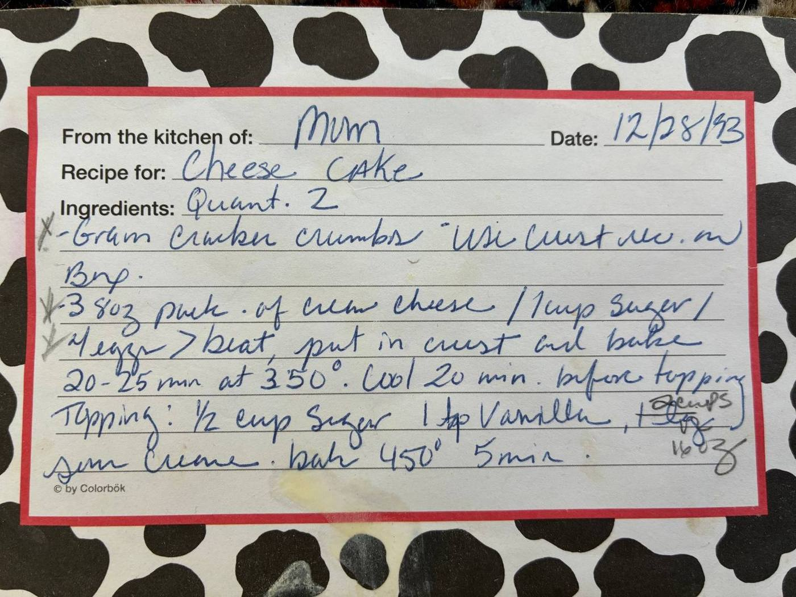

Desserts
Cheesecake
From the kitchen of Mom
Oven350°F, then 450°F
Bake20–25 + 5 min
Makes2 cheesecakes

Mom's original card · tap to enlarge
Ingredients
Crust
Filling
Topping
Method tap a step to mark it done
- Make the graham cracker crust following the recipe on the crumb box.
- Beat the cream cheese, sugar and eggs together.
- Pour into the crust and bake at 350°F for 20–25 minutes (start checking at 20).
- Cool 20 minutes before adding the topping.
- Mix the sugar, vanilla and sour cream; spread over the top.
- Bake at 450°F for 5 minutes.